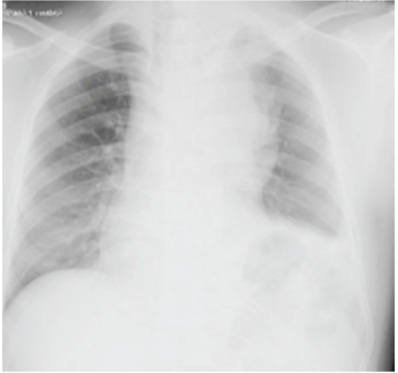
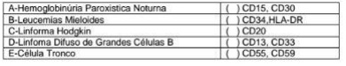

Questão 1 · Quadro clínico da leucemia linf oide aguda LLA · Tratamento da leucemia linf oide aguda LLA · 4000184486Acerca das leucemias linfoides agudas (LLAs) na infância, julgue os itens a seguir. I. 70% das LLAs podem entrar em remissão com a utilização de corticoide. Caso se descon e desse diagnóstico, é indicado utilizar corticoterapia como primeira escolha. II. Cerca de 85% das LLAs são curáveis, desde que recebam quimioterapia conforme protocolo. Atrasos na administração da quimioterapia causam pouco impacto na chance de cura. III. Infecções oportunistas são relativamente comuns e, por essa razão, a pro laxia com sulfametoxazol e trimetropim para pneumocystis carinii IV. A chance de cura vem caindo ao longo dos anos, visto que se tem descoberto formas cada vez mais agressivas da patologia.
A Nenhum item está certo.
B Apenas o item I está certo.
C Apenas o item II está certo.
D Apenas o item III está certo.
E Apenas o item IV está certo.
Questão 2 · Quadro clínico da leucemia linf oide aguda LLA · Síndrome de Lise Tumoral SLT · 4000184079Síndrome de Lise Tumoral Paciente de 7 anos, previamente hígido, apresentando febre diária há 7 dias, prostração, dor abdominal, vômitos e di culdade para respirar. Passou em atendimento médico há 3 dias e, após realização do exame de imagem, recebeu alta com prescrição de amoxicilina 50 mg/kg/dia por 7 dias. Segue com manutenção dos sintomas e queixa-se de diminuição da diurese. Ao exame clínico, REG, pálido, mucosas secas, FC 165 bpm, FR 40 irpm, saturação 93% em ar ambiente, PA 100x50 mmHg, ausculta pulmonar diminuída em base esquerda com crepitações bilaterais, tiragem subdiafragmática e intercostal. Exames iniciais apresentados. Para definir as medidas de estabilização a serem instituídas para este paciente no momento, qual(is) exame(s) deve(m) ser acrescentado(s)?


A Contagem celular diferencial e cultura de líquido pleural.
B Pesquisa de esquizócitos em sangue periférico.
C Lactato desidrogenase, fósforo e ácido úrico séricos.
D Teste rápido molecular para micobactéria.
Questão 3 · Síndrome de Lise Tumoral SLT · Síndrome de Lise Tumoral · Síndrome de lise tumoral SLT · 4000183291A síndrome de lise tumoral é caracterizada pela destruição maciça de células malignas e consequente liberação do seu conteúdo no espaço extracelular. Embora possa ocorrer de modo espontâneo, a síndrome de lise tumoral aparece, e m geral, logo após o início do tratamento com agentes quimioterápicos citotóxicos. A primeira classificação foi desenvolvida por Hande e Garrow, em 1993, e, recentemente, Cairo e Bishop a modi caram. Conforme os critérios mais recentes para o diagnóstico dessa síndrome, é necessário que o paciente apresente, de três dias antes até sete dias depois do tratamento, pelo menos duas das seguintes alterações:
A ácido úrico ≥ 5 mg/dL ou com aumento > 25% do valor de base; potássio ≥ 8 mEq/L ou com aumento > 25% do valor de base; fósforo ≥ 4,5 mg/dL ou com aumento > 25% do valor de base; e(ou) cálcio total ≤ 7 mg/dL ou com redução > 25% do valor de base.
B ácido úrico ≥ 8 mg/dL ou com aumento > 25% do valor de base; potássio ≥ 6 mEq/L ou com aumento > 25% do valor de base; fósforo ≥ 9 mg/dL ou com aumento > 25% do valor de base; e(ou) cálcio total > 7 mg/dL ou com aumento > 25% do valor de base.
C ácido úrico ≥ 5 mg/dL ou com aumento > 25% do valor de base; potássio ≥ 8 mEq/L ou com aumento > 25% do valor de base; fósforo ≥ 9 mg/dL ou com aumento > 25% do valor de base; e(ou) cálcio total > 7 mg/dL ou com aumento > 25% do valor de base.
D ácido úrico ≥ 8 mg/dL ou com aumento > 25% do valor de base; potássio ≥ 6 mEq/L ou com aumento > 25% do valor de base; fósforo ≥ 4,5 mg/dL ou com aumento > 25% do valor de base; e(ou) cálcio total ≤ 7 mg/dL ou com redução > 25% do valor de base.
E ácido úrico < 8 mg/dL ou com redução > 25% do valor de base; potássio < 6 mEq/L ou com redução > 25% do valor de base; fósforo < 4,5 mg/dL ou com redução > 25% do valor de base; e(ou) cálcio total > 7 mg/dL ou com aumento > 25% do valor de base.
Questão 4 · Quadro clínico da leucemia linf oide aguda LLA · Classif icação morf ológica das anemias · 4000183137Menino, 4 anos de idade, apresenta há 4 meses febre e infecções recorrentes. Há 10 dias acorda com dor nas pernas e há 7 dias tem febre diária e adinamia. Exame físico: palidez cutânea e mucosa, esplenomegalia e adenomegalia generalizada. Considerando a hipótese diagnóstica mais provável, qual é o eritrograma esperado?
A Anemia microcítica, hipercrômica com reticulócitos normais.
B Anemia macrocítica, normocrômica com reticulócitos normais.
C Anemia normocítica, normocrômica com reticulócitos diminuídos.
D Anemia microcítica, hipocrômica com reticulócitos diminuídos.
Questão 5 · Quadro clínico da leucemia linf oide aguda LLA · 4000182785Menina de 5 anos foi trazida à Emergência em razão do surgimento de manchas roxas no corpo, quadro iniciado há 5 dias. A mãe referiu que, nos últimos dias, a lha se mostrava mais cansada e se queixava de dor nas pernas ao caminhar. Ao exame, a criança encontrava-se pálida, apática e com temperatura axilar de 38,5° C. Apresentava hematomas no tronco e nos membros inferiores, adenopatias palpáveis nas regiões cervical e axilar, medindo a maior 2 cm de diâmetro, e hepatoesplenomegalia, 5 cm abaixo do rebordo costal. A ausculta cardíaca revelou sopro sistólico ejetivo. O restante do exame físico não mostrou alterações. Foram solicitados exames laboratoriais iniciais. Diante desse quadro, qual o diagnóstico mais provável e a respectiva conduta?
A Quadro viral por Epstein-Barr vírus com indicação inicial de manejo sintomático e retorno ambulatorial programado (em 7 dias)
B Plaquetopenia transitória imune (PTI) da infância com indicação de início imediato de corticoterapia
C Leucemia aguda da infância e internação até o resultado dos exames
D Insuficiência cardíaca congestiva com indicação de avaliação cardiológica com urgência
Questão 6 · Síndrome de Lise Tumoral SLT · Síndrome de Lise Tumoral · Síndrome de lise tumoral SLT · 4000182163Homem, 39 anos, apresenta distensão abdominal e não evacua há 48 horas. Realizada tomogra a computadorizada de abdome com achado de massa de 11 x 8 cm nos maiores diâmetros e sinais de compressão intestinal. Exames laboratoriais: Hemograma: Hb: 8,4 g/ dL, HE 25%, VCM: 98 L, leucócitos: 14.000/mm³, plaquetas: 56.000/mm³ (esfregaço do sangue periférico mostrado na Figura): LDH: 3.236 U/L (VR < 230). ácido úrico: 13 mg/dL (VR < 6.0). Qual alteração eletrolítica é mais provável?

A Hiponatremia.
B Hiperfosfatemia.
C Hipercalcemia.
D Hipocalemia.
Questão 7 · Quadro clínico da leucemia linf oide aguda LLA · Diagnóstico da leucemia linf oide aguda LLA · 4000182093Menino de 8 anos, previamente hígido, apresenta quadro de dor intensa nos joelhos e tornozelos, que o impede de caminhar. Refere que o quadro iniciou há 30 dias, com piora progressiva. A dor é pior no período noturno e o acorda algumas vezes durante a noite. Nega traumas ou infecções recentes, Perdeu 2 quilos no período. Ao exame físico: regular estado geral, fácies de dor, adenomegalia cervical e inguinal com gânglios de até 2 cm, bilaterais, não coalescentes, de consistência broelástica. Dor intensa e limitação à movimentação de joelhos e tornozelos, sem edema ou outras alterações. Exames complementares iniciais: Hb; 10 g/dL, GB: 3.200/mm³ (20% neutró los, 80% linfócitos), plaquetas: 240.000/mm³, VHS 50 mm/1 hora, proteina C reativa 7 mg/dl (VR: abaixo de 0,5 mg/dl). Com relação à principal hipótese diagnóstica, qual o exame a ser solicitado nesse momento?
A Ecocardiograma.
B Anticorpo antinuclear.
C Análise de líquido sinovial.
D Mielograma.
Questão 8 · Hematologia · Síndrome de lise tumoral SLT · 4000170555Um jovem de 22 anos de idade iniciou tratamento quimioterápico para controle de um linfoma de Burkitt, tendo diminuição importante da ingesta de líquidos e alimentos. Cinco dias após a última infusão, começou a apresentar diminuição do volume urinário de maneira importante e um quadro convulsivo, que motivou a busca pelo serviço de emergência. Na avaliação laboratorial, apresentava: sódio 142 mmol/L (VR 135-145 mmol/L); potássio 6,2 mEq/L (VR 3,5-5,5 mmol/L); cálcio corrigido 6,1 mg/dL (VR 8,6-10,2 mg/dL); CPK 967 U/L (VR 22,0-334,0 U/L); ureia 55 mg/dL (VR 16-40 mg/dL); e creatinina 4 mg/dL (VR 0,6-1,2 mg/dL). Com base nos resultados dos exames laboratoriais descritos nesse caso hipotético, assinale a alternativa que mais bem descreve a causa do acometimento renal do paciente.
A rabdomiólise
B síndrome de lise tumoral
C quimiotoxicidade quimioterápica
D desidratação severa
E disseminação neoplásica
Questão 9 · Síndrome de Lise Tumoral SLT · Síndrome de Lise Tumoral · Síndrome de lise tumoral SLT · 4000169582Sobre a síndrome de lise tumoral (SLT), analise os itens abaixo: I. A síndrome é ocasionada pela lise maciça de células tumorais, levando à hiperuricemia, hipercalemia, hiperfosfatemia e hipocalcemia. II. Em razão da gravidade do quadro relacionado à SLT, a identi cação de pacientes oncológicos com maior risco é fundamental, uma vez que a instituição rápida de medidas preventivas constitui a etapa prioritária nesse grupo de pacientes. III. A hipercalcemia, comum na SLT, pode levar a graves arritmias (por exemplo, torsades de Pointes) e irritabilidade neuromuscular (tetania, convulsões e estado de mal epiléptico). Está(ão) CORRETO(S):
A Todos os itens.
B Somente o item II.
C Somente o item III.
D Somente os itens I e II.
Questão 10 · Síndrome de Lise Tumoral SLT · Síndrome de Lise Tumoral · Síndrome de lise tumoral SLT · 4000169073A síndrome de lise tumoral pode ocorrer durante o início do tratamento de algumas doenças onco-hematológicas. As alterações comumente encontradas nessa síndrome são:
A hiperuricemia, hipocalcemia, hipofosfatemia.
B hiperuricemia, hipocalemia, hipercalcemia.
C hiperuricemia, hipercalemia, hiperfosfatemia.
D hipercalcemia, hipercalemia, hipofosfatemia.
E hiperuricemia, hipocalemia, hiperfosfatemia.
Questão 11 · Hematologia · Fundamentos de oncohematologia · 4000167814Um paciente de 2 anos e 3 meses de idade foi levado ao ambulatório de pediatria pela mãe, pois ela está preocupada com um “caroço” no pescoço do lho, que ela notou há cinco meses. Relatou que o lho é bastante ativo, que se alimenta bem, sempre ganhou peso, mas fala pouco e palavras difíceis de compreender. Ademais, há muito tempo apareceram alguns machucados no couro cabeludo dele, que o menino coça bastante e tem algumas crostas. Ao exame físico, constataram- se altura = 90 cm (escore z 0), peso = 12,300 kg (escore z entre 0 e -2), FC = 120 bpm, FR = 26 irpm e SatO2 = 97% em AA. No couro cabeludo, há várias lesões com crostas melicéricas e presença de linfonodo retroauricular medindo 1,5 cm, móvel, fibroelástico, indolor à palpação. Observaram-se oroscopia, dentes em bom estado, sem lesões, sem frênulo lingual, otoscopia, com membrana timpânica translúcida, sem abaulamentos ou retrações e ausculta cardíaca, BNF, RR, 2t, sem sopro. Veri caram-se, ainda, ausculta pulmonar, MVUD, sem RA, abdome, RHA+, depressível, sem megalias, indolor à palpação e genitália com testículos em bolsa escrotal e mose. Com base nesse caso clínico e nos conhecimentos médicos correlatos, julgue o item a seguir. Sempre se deve solicitar USG para descartar malignidade de linfonodos maiores de 1 cm.
A Certo.
B Errado.
Questão 12 · Quadro clínico da leucemia linf oide aguda LLA · Hematologia · 4000163687Uma criança de cinco anos de idade chega ao ambulatório por apresentar dor óssea em membros inferiores, di cultando a deambulação e sem ceder facilmente aos analgésicos habituais. Também apresenta dor toracolombar e astenia. Ao exame físico, é identi cado febre e hepatomegalia, esplenomegalia e linfonodomegalias generalizadas. Qual a principal hipótese diagnóstica?
A Leucemia linfoide aguda.
B Leucemia mieloide aguda.
C Mononucleose infecciosa.
D Artrite reumatoide juvenil.
Revisar: possível letra faltando em enunciado
Questão 13 · Quadro clínico da leucemia linf oide aguda LLA · 4000163529Paciente de 5 anos, com queixa de astenia, fadiga, manchas roxas pelo corpo e dor nas pernas há 2 semanas. Ao exame físico, hipocorada +++/4+, hidratada, ativa e reativa. Temperatura axilar 38,5 ºC. Ausculta pulmonar sem alterações. Bulhas cardíacas rítmicas, 2 tempos, com presença de sopro sistólico ++/4+. Fígado palpável a 5 cm do rebordo costal, e baço a 6 cm. Petéquias e equimoses em membros inferiores. Hemograma evidenciando Hb 4,0 g/dL, VCM 84 fL, leucócitos 600x10³/uL, plaquetas 2.000/uL. O diagnóstico provável é:
A anemia aplástica severa.
B deficiência de B12.
C endocardite bacteriana.
D leucemia linfocítica aguda.
E trombocitopenia primária imune.
Questão 14 · Síndrome de Lise Tumoral SLT · Síndrome de Lise Tumoral · Síndrome de lise tumoral SLT · 4000151668Paciente de 6 anos de idade, sexo masculino, encaminhado a Emergência Pediátrica do Hospital da Criança por história de febre de no máximo 38°C, 1 a 2 episódios ao dia, há cerca de 15 dias, associado a hematomas em todo o corpo, não relacionados a trauma. Refere também perda ponderal de cerca de 6kg neste período. Ao exame físico REG. hipocorado 3+/4+, acianótico, afebril, anictérico. Ausculta pulmonar: MV + bilateralmente, sem RA, FR: 30ipm, sem sinais de desconforto respiratório. Aparelho cardiovascular: BNF. RCR 2T, sopro sistólico 2+/6+. FC: 140 bpm, PA: 100 x 60 mmHg. Abdome: globoso, indolor a palpação super cial, fígado a 4cm RCD e baço a 3cm RCE. Na investigação inicial, foram coletados exames laboratoriais com hemograma com as seguintes alterações: Hb: 6,5 Ht: 22% Leucócitos: 385 mil, sem diferencial Plaquetas: 40 mil. O paciente apresenta alterações laboratoriais que a caracterizam como alto risco de lise tumoral. Esta emergência oncológica caracteriza-se laboratorialmente por:
A Hipercalemia, Hiperfosfatemia, Hipocalcemia e Hiperuricemia.
B Hipercalemia, Hiperfosfatemia. Hipercalcemia e Hiperuricemia.
C Hipercalemia, Hipocalcemia, Hiperfosfatemia e Redução dos níveis da enzima desidrogenase lática (DHL).
D Hipercalemia, Hipofosfatemia, Hipercalcemia e Aumento dos níveis da enzima desidrogenase lática (DHL).
Questão 15 · Síndrome de Lise Tumoral SLT · Síndrome de Lise Tumoral · Síndrome de lise tumoral SLT · 4000151647Paciente de 28 anos, masculino, admitido com história de perda ponderal, sudorese noturna e febre intermitente. Permaneceu internado na Enfermaria de Ensino até o diagnóstico de doença linfoproliferativa. Enquanto aguardava o resultado da imunofenotipagem, foi transferido para a Hematologia, ocasião em que foi iniciado corticosteroides. Evoluiu com edema de membros inferiores bilateralmente e oligúria. Assinale a alternativa que compreende o melhor conjunto de exames para a elucidação diagnóstica do caso.
A Exame de Urina, fósforo, creatinina, potássio, cálcio, ácido úrico e desidrogenase lática.
B Exame de Urina, hemograma, creatinina, sódio, dímero D, CPK e doppler de membros inferiores.
C Exame de Urina, creatinina, sódio, potássio, peptídeo natriurético atrial, eletrocardiograma e ecocardiograma.
D Exame de Urina, sorologia para HIV, proteínas totais e frações, potássio, bilirrubina indireta, creatinina e hemograma.
Questão 16 · Pediatria · Hematologia Pediátrica · Síndrome de lise tumoral SLT · 4000146250Paciente de 1 ano de idade, sexo masculino, foi encaminhado para a emergência com suspeita diagnóstica de leucemia aguda. Ao exame físico apresenta-se: descorado (2+/4+), eupneico, acianótico, ausculta pulmonar sem particularidades, raras equimoses em membros inferiores e presença de hepatoesplenomegalia. Hemograma: leucócitos= 320.000/mm3, hemoglobina= 8g/dL, contagem de plaquetas= 50.000/mm3. Qual a conduta inicial recomendada para essa criança?
A Prescrever concentrado de hemácias e de plaquetas e iniciar leucoaférese.
B Prescrever concentrado de hemácias e de paquetas.
C Prescrever concentrado de plaquetas e iniciar leucoaférese.
D Prescrever hidratação EV (3L/m2/dia e agente hipouricemiante.
Questão 17 · Síndrome de Lise Tumoral SLT · Síndrome de Lise Tumoral · Cirurgia · 4000146247São fatores de risco para Síndrome da Lise Tumoral todos os abaixo, exceto:
A anemia.
B potássio maior ou igual a 6mEq/L.
C baixa taxa de filtração glomerular.
D ácido úrico e DHL pré tratamento elevados.
Questão 18 · Quadro clínico da leucemia linf oide aguda LLA · 4000146214Pré-escolar do sexo masculino, deu entrada em pronto-atendimento com história de febre há 10 dias, de caráter intermitente, com artralgias em membros inferiores, adinamia e com aparecimento de equimoses em membros e parede abdominal. Ao exame físico, apresenta palidez e hepatoesplenomegalia. Fez hemograma, que evidenciou pancitopenia. O diagnóstico MAIS PROVÁVEL é:
A Leucemia aguda
B Calazar.
C Mononucleose infecciosa.
D Artrite reumatoide juvenil.
Questão 19 · Síndrome de Lise Tumoral SLT · Síndrome de Lise Tumoral · Síndrome de lise tumoral SLT · 4000145371Paciente, masculino, 22 anos, sem comorbidades, com diagnóstico de Linfoma de Burkkit, tem indicação de iniciar o tratamento quimioterápico de indução. Não se constitui medida de prevenção a possíveis complicações esperadas que o tratamento oncológico possa gerar:
A Suspensão de terapia com cálcio
B Alcalinização da urina para um pH acima de 7,0, mediante administração de bicarbonato de sódio
C Administração de alopurinol, 300 miligramas por metro quadrado ao dia
D Administração de hidratação venosa em quantidade mínima de três litros por metro quadrado ao dia
E Hemodiálise profilática previamente ao início da quimioterapia
Questão 20 · Quadro clínico da leucemia linf oide aguda LLA · Introdução às leucemias agudas · 4000145078Pré-escolar de quatro anos, sexo feminino, apresenta há seis semanas dor nos membros inferiores e di culdade de deambular. O quadro vem evoluindo com febre baixa intermitente, dor articular, palidez e episódios de epistaxe. Exame físico: hipocorada; equimoses difusas em membros; linfadenomegalia cervical e inguinal; hepatoesplenomegalia. O exame complementar indicado inicialmente para a investigação diagnóstica é:
A Hemograma.
B Coagulograma.
C Cintilografia óssea.
D Dosagem de ácido ascórbico.
E Pesquisa de anticorpo antinuclear.
Questão 21 · Síndrome de Lise Tumoral SLT · Síndrome de Lise Tumoral · Síndrome de lise tumoral SLT · 4000143325GSM, 15 anos, após iniciar quimioterapia para tratamento de leucemia linfoide aguda, evolui com redução de volume urinário e elevação das escórias nitrogenadas, caracterizando injúria renal aguda. A etiologia do acometimento renal e os seus achados característicos são, respectivamente,
A rabdomiólise; hipercalcemia, hipouricemia, hiperfosfatemia e hipercalemia.
B síndrome de lise tumoral; hipocalcemia, hiperuricemia, hiperfosfatemia e hipercalemia.
C rabdomiólise; hipocalcemia, hiperuricemia, hipofosfatemia e hipocalemia.
D síndrome de lise tumoral; hipercalcemia, hipouricemia, hipofosfatemia e hipocalemia.
E rabdomiólise; hipocalcemia, hiperuricemia, hiperfosfatemia e hipocalemia.
Questão 22 · Síndrome de Lise Tumoral SLT · Síndrome de lise tumoral SLT · 4000140429A síndrome de lise tumoral é uma emergência oncológica, que deve ser identi cada e tratada o quanto antes. São alterações laboratoriais e medidas que fazem parte do tratamento dessa síndrome, respectivamente:
A Hiperuricemia, hipercalemia, hipofosfatemia e hipocalcemia − Diureticoterapia e alopurinol.
B Hiperuricemia, hipocalemia, hiperfosfatemia e hipocalcemia − Hidratação venosa e corticoide.
C Hiperuricemia, hipercalemia, hiperfosfatemia e hipercalcemia − Hidratação venosa e alopurinol.
D Hiperuricemia, hipercalemia, hiperfosfatemia e hipocalcemia − Hidratação venosa e alopurinol.
E Hiperuricemia, hipocalemia, hipofosfatemia e hipercalcemia − Diureticoterapia e corticoide.
Questão 23 · Síndrome de Lise Tumoral SLT · Nef rologia · Síndrome de lise tumoral SLT · 4000134622A Sindrome de lise tumoral é uma emergência oncológica muito comum em tratamento de tumores hematológicos. Os principais eletrólitos que devem ser avaliados em um contexto de Sd. lise tumoral são:
A Sódio, ácido úrico, potássio.
B Sódio, potássio, magnésio.
C Magnésio, fósforo, sódio.
D Potássio, ácido úrico, cálcio.
E Potássio, cálcio, magnésio.
Questão 24 · Síndrome de Lise Tumoral SLT · Síndrome de lise tumoral SLT · 4000133182Homem de 25 anos, sabidamente portador de Leucemia linfoblástica Aguda, em atual manejo sistêmico de tratamento com uso de quimioterápicos. Informa última sessão realizada há cerca de sete dias. Admitido para avaliação com relato de câimbras em membros inferiores, náuseas, vômitos e diarreia de início recente. Nega febre, manifestações dermatológicas ou outras manifestações sistêmicas. Exames laboratoriais: creatinina: 3,7 mg/dL, ureia 200mg/dL, Sódio: 155meq/L, Potassio: 6,0meq/L, cloretos: 125meq/L, leucócitos totais: 100.000 cels /mm3 (90% blastos 5% neutró los, 3% macrófagos) plaquetas: 100.000 mm3 Hb:9,0g/dL Ht:28% fósforo: 7 mg/L (VR: até 4,8mg/dL) cálcio iônico: 1,0 mg/dL (valor de referência: (até 1,2mg/dL) ácido úrico: 12 mg/dL TGO:45 Ui/L TGP:50 Ui/L FA:200 Ui/L GGT: 280 Ui/L HCO3 ( venoso): 18meq/L. Diante da melhor hipótese diagnóstica assinale a conduta clínica inicial mais apropriada:
A Monitoramento contínuo, hidratação venosa, correção dos distúrbios hidroeletrolíticos, uso de rasburicase.
B Monitoramento contínuo, hidratação venosa e alcalinização urinária.
C Monitoramento contínuo e início imediato de terapia renal substitutiva.
D Monitoramento contínuo, coleta de culturas e início de protocolo para sepse em imunossuprimido.
Questão 25 · Classif icação das leucemias agudas · Hematologia Pediátrica · 4000129521Gabriel, 5 anos de idade, há 2 meses vem apresentando palidez cutâneo mucosa progressiva e febre moderada. Há 15 dias, mãe notou o aparecimento de petéquias e equimoses e refere que seu lho acorda com dor óssea de forte intensidade em membros inferiores que pouco cede com analgésicos comuns. Ao exame físico, apresenta palidez cutâneo-mucosa (++/4+), hepatoesplenomegalia e petéquias e equimoses em membros inferiores e região torácica. Realizado hemograma que evidenciou anemia, leucocitose e plaquetopenia. O diagnóstico mais provável de Gabriel é:
A Leucemia aguda.
B Anemia falciforme.
C Leishmaniose visceral.
D Artrite Idiopática Juvenil.
Questão 26 · Leucemia promielocítica aguda LPA ou LMAM3 · 4000125756Mulher de 20 anos vem notando hematomas espontâneos em membros superiores e inferiores há cerca de três semanas. Refere também aumento importante do uxo menstrual e epistaxe. Nos últimos dias, passou a apresentar cansaço aos mínimos esforços. Seu hemograma evidencia: leucócitos 15.000/ mm³ ; hemoglobina de 6,0 g/dL; contagem de plaquetas 19.000/mm³ . Função renal, hepática e eletrólitos normais. TP e TTPa alargados. D dímero aumentado. Ao avaliar a hematoscopia, observa-se presença de células blásticas hiper granulares, algumas contendo múltiplos bastonetes de Auer. O diagnóstico é
A púrpura imune (PTI).
B púrpura trombocitopenia trombótica (PTT).
C leucemia promielocítica aguda.
D aplasia de medula óssea.
E anemia megaloblástica.
Questão 27 · Quadro clínico da leucemia linf oide aguda LLA · Hematologia · 4000124818Pré-escolar, três anos, é atendido no ambulatório de pediatria geral com queixas de febre e dor nas pernas. A febre tem sido intermitente, tendo chegado a 38,6°C nos últimos cinco dias e a dor nas pernas o tem acordado à noite. As vacinas estão atualizadas e o paciente não tem comorbidades. Mãe relata que recentemente surgiram algumas manchas arroxeadas nos braços e pernas, porém, relaciona a trauma associado a atividades. Refere infecção viral prévia, há aproximadamente três semanas, com resolução espontânea. Sinais vitais: Tax. = 38,2°C, FC = 120 batimentos/minuto, FR = 24 irpm, PA = 100x60mmHg e saturação de oxigênio de 100% em ar ambiente. Adenomegalia cervical inexpressiva. Ausculta cardíaca e pulmonar sem alterações. Abdômen sem hepatoesplenomegalia. Presença de equimoses discretamente dolorosas em áreas expostas e não expostas. Exame neurológico sem alterações. Exames laboratoriais: 1.500 leucócitos/mm³ (5% de eosinó los, 5% neutró los, 85% linfócitos, 5% monócitos); hemoglobina = 8,5 g/dL, hematócrito = 24%, reticulócitos = 0,4%, plaquetas = 75.000/mm³. O diagnóstico mais provável para esse paciente é de:
A anemia aplástica.
B leucemia linfocítica aguda.
C leucemia linfocítica crônica.
D mononucleose infecciosa.
E imunossupressão pós-viral.
Questão 28 · Hematologia · Leucemia linf oide aguda LLA · 4000124385Pais relatam que, há aproximadamente 20 dias, lho de cinco anos iniciou quadro de adinamia, fadiga, dores em membros inferiores e nas articulações dos joelhos, febre intermitente e equimoses pelo corpo, após traumas leves. Exame físico: palidez cutâneo mucosa++/4+, linfonodomegalias em região cervical bilateralmente, baço palpável a 6,5cm do rebordo costal esquerdo, fígado palpável a 3,5cm do rebordo costal direito, equimoses difusas em membros inferiores e dorso. Há cerca de uma semana, foi iniciado pelo médico assistente corticoide via oral para criança, com melhora das dores em membros inferiores. Exames laboratoriais: hematócrito: 22,5%; hemoglobina: 7,4g/dL, VCM: 78,3fL, CHCM: 32,8g/dL; HCM: 25,7pg; leucócitos: 8.000/mm³ (linfócitos 88%, segmentados 12%), contagem de plaquetas 25.000/mm³. A principal hipótese diagnóstica é:
A Aplasia medular.
B Artrite reumatóide.
C Leucemia linfoide aguda.
D Mononucleose infecciosa.
E Lúpus eritematoso sistêmico.
Questão 29 · Síndrome de Lise Tumoral SLT · Síndrome de lise tumoral SLT · 4000106161Homem de 25 anos, ao ser submetido a quimioterapia para tratamento de linfoma de Burkitt, desenvolveu quadro típico de síndrome de lise tumoral, caracterizado por náusea, letargia, convulsão,
A Hipocalemia, hipofosfatemia e hipercalcemia.
B Hipercalemia, hipofosfatemia e hipocalcemia.
C Hipercalemia, hiperfosfatemia e hipocalcemia.
D Hipercalemia, hipofosfatemia e hipercalcemia.
E Hipocalemia, hiperfosfatemia e hipocalcemia.
Questão 30 · Quadro clínico da leucemia linf oide aguda LLA · Hematologia · 4000084340Diagnóstico da leucemia linf oide aguda LLA Analise as alterações que podem ser encontradas no hemograma de uma criança com história de dor nos ossos, di culdade para deambular, febre, palidez, astenia e linfadenomegalias generalizadas e suspeita de leucemia linfoide aguda: I - O número de leucócitos é quase sempre aumentado, podendo ser observada hiperleucocitose, acima de 50.000/mm3, o que indica maior gravidade. II - A anemia é evidente em praticamente todos os casos e, em geral, é normocrômica, normocítica, com diminuição do número de reticulócitos. III - A trombocitopenia ocorre na maioria dos pacientes, e, em aproximadamente 75% dos casos, a contagem é inferior a 100.000 plaquetas/mm3. Quais estão corretas?
A Apenas I e II.
B Apenas I e III.
C Apenas II e III.
D I, II e III.
Questão 31 · Linf omas não Hodgkin LNH muito agressivos protótipo Burkitt · Síndrome de Lise Tumoral SLT · 4000083537Síndrome de lise tumoral SLT Paciente de 23 anos com diagnóstico de linfoma de Burkitt com rápido crescimento de massas retroperitoneais iniciará quimioterapia. Prevendo uma complicação potencialmente grave, que incide nos primeiros dias da terapia, deve-se prescrever, a partir do dia anterior à realização do procedimento:
A hidratação e alopurinol
B antieméticos e opiáceos
C vancomicina e ceftazidima
D voriconazol e vancomicina
Questão 32 · Síndrome de Lise Tumoral SLT · Síndrome de lise tumoral SLT · 4000082107A Síndrome de Lise Tumoral (SLT), decorrente da destruição maciça de células neoplásicas e com elevado potencial de mortalidade, é uma complicação temí vel em pacientes oncológicos. Sobre o diagnóstico e manejo da SLT, considere as seguintes afirmações: I - Síndrome de Lise Tumoral Laboratorial ocorre quando duas ou mais das seguintes anormalidades surgem espontaneamente ou após início de terapia oncológic a: hiperuricemia, hipercalemia, hiperfosfatemia e hipercalcemia. II - Síndrome de Lise Tumoral Clínica acontece quando a Síndrome de Lise Tumoral Laboratorial vem acompanhada de alguma complicação: elevação da creatinina, convulsões, arritmia cardíaca ou parada cardiorrespiratória. III - Rasburicase e hidratação com uidos intravenosos são recomendados como tratamento de primeira linha para pacientes com alto risco para Síndrome de Lise Tumoral Clínica. IV - A alcalinização urinária com bicarbonato de sódio aumenta a solubilidade do fosfato de cálcio nos túbulos renais, devendo ser indicada em pacientes com insuficiência renal, decorrente da Síndrome de Lise Tumoral. Estão corretas as afirmativas
A I e IV.
B II e III.
C I e II.
D III e IV.
Questão 33 · Leucemia mieloide aguda LMA · 4000075822Sobre a leucemia mielóide aguda no adulto pode-se afirmar:
A Pode ocorrer uma síndrome pré-leucêmica em cerca de 95% dos pacientes com leucemia mileóide aguda.
B A trombocitopenia acarreta sangramento espontâneo, epistaxe, petéquias, hemorragia conjuntival, sangramento gengival e equimoses, sobretudo se a contagem de plaquetas estiver entre 100.000 - 60.000/mm³.
C Os sinais de anemia, palidez, fadiga, fraqueza, palpitações e dispneia aos esforços são extremamente raras.
D A contagem de leucócitos pode estar baixa, normal ou acentuadamente elevada.
E As células blásticas circulantes estão obrigatoriamente presentes para o diagnóstico.
Questão 34 · Classif icação da leucemia linf oide aguda LLA morf ológica citogenética e biologia molecular · 4000067827É fator prognóstico favorável na Leucemia Linfóide Aguda (LLA):
A Idade inferior a 1 ano e superior a 9 anos.
B Leucometria acima de 50.000/mm3.
C Hipodiploidia menor que 44 cromossomos.
D Linfoblastos precursores de células T.
E Linfoblastos precursores de células B.
Questão 35 · Classif icação das neoplasias hematológicas · 4000047060Sobre as neoplasias hematológicas, marque a alternativa correta.
A O termo ""Leucemia"" designa uma neoplasia hematológica caracterizada pela presença de células malignas exclusivamente na medula óssea.
B O termo ""Linfoma"" refere-se a uma proliferação localizada de células linfoides formando uma massa tecidual sólida.
C Células B maduras expressam em geral marcadores para CD3, CD2 e CD5, sendo que 80% delas expressam CD7.
D Células NK em geral expressão CD2, CD3 e CD7.
E Neoplasias de NK expressam altos níveis de CD20.
Questão 36 · Classif icação da leucemia linf oide aguda LLA morf ológica citogenética e biologia molecular · 4000042477As leucemias têm como principal característica o acúmulo de células jovens anormais, denominadas de blastos, que substituem as células sanguíneas normais na medula óssea. Nas leucemias é correto afirmar:
A A leucemia linfoide aguda (LLA) é uma doença grave e a taxa de sobrevida atual da LLA na infância é inferior a 30%.
B Nas LLA a idade entre 01 a 09 anos é um fator de bom prognóstico.
C Nas leucemias a dor óssea é rara, quando ocorre é mais comum nos membros superiores e é controlada com analgésicos habituais.
D As leucemias são raras na infância e a presença de febre significa infecção bacteriana,relacionada à neutropenia.
Questão 37 · Hematologia · Tratamento da leucemia linf oide aguda LLA · 4000033664Criança de sete anos de idade foi admitida na UPA com relato de quadro de prostração, hiporexia, cansaço e dor em membros inferiores de início há duas semanas. Ao exame físico: criança afebril, hipocorada e hidratada. Oroscopia e otoscopia sem alterações; FR: 28irpm, sem sinais de esforço respiratório, SatO₂ 96% em ar ambiente; FC: 110bpm, pulsos periféricos cheios, perfusão imediata; abdome indolor sem visceromegalias. Resultado do hemograma: Hemácias: 2,43 milhões/mm³ (VR: 4,0-5,2 milhões/ mm³); Hemoglobina: 8,5g/dl (VR: 11,5 - 15,5 g/dL); Hematócrito: 25% (VR: 3545%) Global de leucócitos: 124.180/mm³ (VR: 4.500-13.500/mm³); Diferencial: 2% neutró los; 10% linfócitos; 88% blastos. Plaquetas: 32.000/mm³ (VR: 150.000 a 450.000/mm³) Assinale a conduta imediata MAIS ADEQUADA.
A Iniciar ceftriaxone e oxacilina
B Iniciar hiperidratação venosa
C Realizar transfusão de hemácias
D Realizar transfusão de plaquetas
Questão 38 · Leucemias agudas · 4000023839Paciente 31 anos, admitido no PA por quadro de febre, astenia e sangramento (gengivorragia). Exames laboratoriais revelaram pancitopenia, alteração de TAP e brinogênio. Equipe assistente colheu mielograma que revelou presença de 55% de blastos na medula, às custas de promielócitos. Considerando a hipótese diagnóstica provável após os exames, qual a opção terapêutica indicada que mudou o prognóstico dos pacientes diagnosticados com essa doença?
A Gentuzumabe.
B Rituximabe.
C Ácido transretinoico.
D Adriamicina.
Questão 39 · Leucemias agudas · Introdução às leucemias · 4000022653Paciente de 5 anos, feminino, com história de dor em membros inferiores de início há 15 dias, acompanhada de astenia, palidez, febre e equimoses. Hemograma com pancitopenia. Ao exame físico, evidenciou-se uma hepatoesplenomegalia. O diagnóstico mais provável é:
A Hemofilia
B Febre reumática
C Púrpura de Henoch-Schonlein
D Lúpus eritematoso sistêmico
E Leucemia aguda
Questão 40 · Classif icação da leucemia linf oide aguda LLA morf ológica citogenética e biologia molecular · 4000121414Diagnóstico da leucemia linf oide aguda LLA Assinale a alternativa que não apresenta um aspecto prognóstico relevante nas leucemias linfocíticas agudas (LLAs).
A leucometria inicial
B número de cromossomos no cariótipo
C febre
D idade avançada
E infiltração do sistema nervoso central
Questão 41 · Leucemia mieloide aguda LMA · 4000115518Paciente com 28 anos chega ao PS com sangramento gengival, hematúria e petéquias em membros inferiores. Apresenta febre há 2 dias e em seu hemograma Hb = 9,3 g/dl, Leucócitos = 2100/mm³ (Segmentados = 15%, Linfócitos 40% e presença de 45% de células imaturas) e Plaquetas = 16.000/ mm³. Qual é o provável diagnóstico, o exame necessário para a confirmação diagnóstica e as primeiras medidas terapêuticas?
A Púrpura Trombocitopênica Imunológica, pesquisa de anticorpos anti-plaquetas e imunossupressão.
B Leucemia Mielóide Crônica, pesquisa da mutação BCR/ABL, transfusão de plaquetas e Inibidor de Tirosino Quinase.
C Leucemia Linfóide Crônica, Mielograma e Imunoquimioterapia.
D Leucemia Mielóide aguda, Mielograma, transfusão de plaquetas e antibioticoterapia sistêmica (empírica).
Questão 42 · Tratamento · Síndrome de Lise Tumoral SLT · Quadro clínico · 4000086655Mulher, 65, com diagnóstico de carcinoma de pulmão de pequenas células, procura a emergência com queixa de emagrecimento, dispneia e tosse seca progressiva. Ao exame físico, apresenta edema facial leve e ingurgitamento de vasos torácicos super ciais. Tomogra a demonstra nódulos pulmonares e extensas linfadenomegalias mediastinais fusionadas formando massa de, aproximadamente, 17 cm no maior diâmetro e lesões hepáticas em todos os segmentos, compatíveis com implantes secundários. Foi definido início imediato de quimioterapia sistêmica com cisplatina e etoposídeo. A partir desse momento, qual é a conduta?
A Prescrever hidratação, rasburicase e alcalinização da urina.
B Prescrever hidratação e espironolactona para aumentar o débito urinário.
C Monitorar o débito urinário para indicar o início da hiper-hidratação e prescrever rasburicase.
D Solicitar ácido úrico, fosfato, potássio, creatinina, cálcio e LDH séricos 48 horas após o início da quimioterapia.
Questão 43 · Leucemia mieloide aguda LMA · 4000085716Considere as assertivas abaixo sobre leucemia mieloide aguda (LMA). I - LMA é uma forma de câncer caracterizada pela in ltração da medula óssea, do sangue ou de outros tecidos por células hematopoiéticas de linhagem mieloide, com características clonais, proliferativas e de diferenciação anômala. II. - Os fatores prognósticos relacionados a LMA dizem respeito exclusivamente às condições do paciente ao dignóstico, tais como idade, comorbidades ou performance status. III. - Transplante de medula óssea alogênico como terapia pós-remissão consiste na mais intensiva terapia antineoplásica, porém está associado a importante morbimortalidade. Quais são corretas?
A Apenas I
B Apenas II
C Apenas III
D Apenas I e III
E I, II e III
Questão 44 · Síndrome de Lise Tumoral SLT · Leucemia linf oide aguda LLA · Síndrome de lise tumoral SLT · 4000073050No decorrer do tratamento quimioterápico de paciente portador de leucemia linfocitica aguda com alta contagem leucocitária, instala-se anuria. A conduta que deveria ter preenchido o início de tratamento, para evitar esta complicação é:
A Hidratação restritiva, corticoterapia e dosagem sérica de ácido úrico.
B Sódio abundante, acidificação urinaria e inibidores de aldosterona.
C Sódio restritivo, diuréticos de alça e inibidores da enzima de angiotensina.
D Hidratação generosa, alcalinização urinária e inibidores de xantina oxidase.
E Hidratação generosa, diuréticos de alça e inibidores de xantina oxidase.
Questão 45 · Síndrome de lise tumoral SLT · 4000063749São alterações encontradas na síndrome da lise tumoral:
A Hiperuricemia e hipercalcemia.
B Hipocalemia e hipocalcemia.
C Hiperuricemia e hipercalemia.
D Hiperuricemia e hipofosfatatemia.
E Hiperfosfatemia e hipouricemia.
Questão 46 · Leucemia mieloide aguda LMA · Neutropenia f ebril · Introdução às leucemias agudas · 4000053771Jovem de 26 anos apresenta sangramento gengival, febre há 2 dias, hematúria e petéquias em membros inferiores. Hemograma: Hb = 9,6 g/dl; leucócitos = 1.900/mm³ (segmentados = 14%, linfócitos 41% e presença de 44% de células imaturas); plaquetas = 17.000/ mm³. Qual a hipótese mais provável, conduta para confirmação diagnóstica e terapia inicial?
A Leucemia Mieloide Crônica (LMC), pesquisa de mutação BCR/ABL, transfusão de plaquetas.
B Púrpura trombocitopênica imunológica, pesquisa de anticorpos anti-plaquetas e corticoterapia.
C Leucemia mieloide aguda, mielograma, transfusão de plaquetas e antibioticoterapia empírica.
D Leucemia hairy cell, pesquisa de cromossomo Philadelphia e interferon gama.
E Leucemia linfoide crônica, mielograma e quimioterapia.
Questão 47 · Leucemia linf oide aguda LLA · 4000049898As leucemias são as neoplasias mais comuns da infância, correspondendo a aproximadamente 28% de todos os tipos de câncer na faixa etária pediátrica. Em relação às leucemias na infância, assinale a afirmativa correta.
A As leucemias mielóides agudas são as mais comuns, correspondendo de 75 a 80% dos casos, seguidas pelas leucemias linfóides agudas, entre 15 a 20%.
B Estão entre os fatores prognósticos favoráveis da leucemia linfóide aguda: idade entre 1 a 9 anos e leucometria abaixo de 50000/mm³.
C Ao suspeitar ou diagnosticar uma leucemia, deve-se prontamente iniciar o corticóide sistêmico antes de encaminhar ao oncologista, como maneira de melhorar o prognóstico.
D O transplante de medula óssea é o tratamento mais indicado para um paciente com leucemia linfóide aguda.
Questão 48 · Síndrome de lise tumoral SLT · 4000046150Paciente 32 anos iniciou quimioterapia para tratamento de leucemia linfoblástica aguda. Após dois dias da primeira dose foi admitido no hospital por mal-estar seguido por convulsão. Qual o achado bioquímico mais consistente com o diagnóstico?
A Hipercalcemia
B Hiperuricemia
C Hipocalemia
D Hipomagnesemia
Questão 49 · Classif icação da leucemia linf oide aguda LLA morf ológica citogenética e biologia molecular · 4000016122Diagnóstico da leucemia linf oide aguda LLA Assinale a alternativa que NÃO apresenta um aspecto prognóstico relevante nas leucemias linfocíticas agudas (LLAs).
A Leucometria inicial;
B Número de cromossomos no cariótipo;
C Febre;
D Idade avançada;
Questão 50 · Leucemia mieloide aguda LMA · 4000128290Homem de 50 anos procurou atendimento médico devido a gengivorragia, epistaxe e febre há 2 dias. Ao exame, temperatura axilar = 39°C; pressão arterial = 120/70 mmHg; frequência cardíaca = 120 bpm e frequência respiratória = 22 irpm. Foram auscultadas crepitações teleinspiratórias na base do hemitórax direito. Diante desses achados, optou- se por interná-lo para investigação adicional. Radiogra a de tórax mostrou opacidade com broncograma aéreo na base do pulmão direito. Hemograma evidenciou anemia (hemoglobina = 10,2 g/dl); leucocitose (12.000/mm³) com numerosos mieloblastos e plaquetopenia 15.000/mm³). Mielograma revelou medula hipercelular com 45% de mieloblastos. Bastonetes de Auer foram observados nos blastos presentes na medula óssea e sangue periférico. Dentre as opções abaixo, qual é o diagnóstico MAIS PROVÁVEL para o quadro hematológico?
A Leucemia linfoide aguda.
B Leucemia mieloide aguda.
C Reação leucemoide.
D Síndrome mielodisplásica.
Questão 51 · Síndrome de Lise Tumoral SLT · Síndrome de lise tumoral SLT · 4000110586Qual alteração laboratorial é compatível com síndrome de lise tumoral?
A hipouricemia
B hipercalcemia
C hiperfosfatemia
D hipocalemia
E hipernatremia
Questão 52 · Hematologia · Diagnóstico da leucemia linf oide aguda LLA · 4000106226Menina de 18 meses, portadora de síndrome de Down, procurou atendimento médico devido a quadro de febre há 4 dias, hiporexia, cansaço fácil, gengivorragia e manchas roxas em membros e tronco. Ao exame físico apresentava-se em regular estado geral e com palidez cutâneo-mucosa. Presença de equimoses e petéquias em membros e tronco. fígado palpável a 3 cm do rebordo costal direito e baço a 4 cm do rebordo costal esquerdo. Solicitados exames que mostraram: hemoglobina 7,5 g/dl, glóbulos brancos 53.000/mm3, plaquetas 12.000/mm³. Mielograma relação leuco-eritrocitária 12:1, séries vermelha e megacariocítica hipocelular, séria branca hipercelular, 90% de blastos. Imunofenotipagem positiva para Tdt, CD19 e CD10. Negativo para CD13, CD34 e cCD3. Com base no exposto acima qual é o diagnóstico?
A Leucemia promielocítica aguda
B Leucemia linfoide aguda de linhagem T
C Leucemia megacarioblástica aguda
D Leucemia linfoide aguda de linhagem B
Questão 53 · Síndrome de Lise Tumoral SLT · Síndrome de Lise Tumoral · Síndrome de lise tumoral SLT · 4000100025A Síndrome de Lise Tumoral caracteriza-se pela tríade _____, cujo tratamento consiste em ______:
A Hipercalcemia, hiperuricemia, hipercalemia / Hiperhidratação sem K, alcalinização,bifosfonato.
B Hipercalcemia, hiperuricemia e hipercalemia / Restrição hídrica, corticóide,alcalinização.
C Hiperuricemia, hipercalemia, hiperfosfatemia / Restrição Hídrica, alcalinização, agentehipouricemiante
D Hiperuricemia, hipercalemia, hiperfosfatemia / Hiperhidratação sem K, alcalinização,agente hipouricemiante
Questão 54 · Quadro clínico da leucemia linf oide aguda LLA · 4000098066Criança de 4 anos com história de dor em crista ilíaca direita há 25 dias. A mãe refere que a dor vem piorando progressivamente, mesmo com uso de analgésicos. A dor vem acompanhada de febre, emagrecimento e parada da deambulação nos últimos dias. Ao exame físico apresenta palidez cutânea 2+/4, irritabilidade, afebril, abdome ácido, hepatoesplenomegalia 2 cm do rcd, indolor, petéquias em membros e exame neurológico normal. Apresenta hemograma com hemoglobina de 8,2 mg/dl e 43000 plaquetas com leucocitose de 30000 leucócitos. Qual seria o próximo exame a ser solicitado?
A Radiografia de coxofemoral bilateral
B Mielograma
C Cintilografia óssea
D Escanometria digital
Questão 55 · Síndrome de Lise Tumoral SLT · Síndrome de lise tumoral SLT · 4000095848Está associado ao risco aumentado de lise tumoral, EXCETO:
A Hipotensão
B Desidratação
C Insuficiência hepática prévia ao diagnóstico de câncer
D Metástase extensa
Questão 56 · Síndrome de Lise Tumoral SLT · Síndrome de lise tumoral SLT · 4000088896Paciente de 18 anos, sexo masculino, internado em uma enfermaria com diagnóstico de linfoma de Burkitt avançado, tendo recebido tratamento quimioterápico há 3 dias, apresentou exames laboratoriais compatíveis com diagnóstico de síndrome de lise tumoral (SLT). As alterações eletrolíticas e metabólicas relatadas nesse caso são:
A hipouricemia, hiperfosfatemia, hipocalcemia e hipopotassemia.
B hiperuricemia, hipofosfatemia, hipercalcemia e hiperpotassemia.
C hipouricemia, hipofosfatemia, hipercalcemia e hipopotassemia.
D hiperuricemia, hiperfosfatemia, hipocalcemia e hiperpotassemia.
Questão 57 · Síndrome de Lise Tumoral SLT · Síndrome de lise tumoral SLT · 4000066816Em relação à síndrome de lise tumoral, identifique como verdadeiras (V) ou falsas (F) as seguintes afirmativas: ( ) Os principais fatores predisponentes são as grandes massas tumorais e hiperleucocitose. ( ) A hipercalcemia secundária à morte celular é fator de risco para insuficiência renal. ( ) São alterações laboratoriais: hiperuricemia, hiperpotassemia e hipofosfatemia. ( ) Ocorre mais frequentemente nos tumores sensíveis à quimioterapia, principalmente nos linfomas de Burkitt, leucemias e linfomas de células T. ( ) Deve-se prescrever restrição hídrica, para prevenção da insu ciência renal aguda, e alopurinol, para tratamento da hiperuricemia. Assinale a alternativa que apresenta a sequência correta, de cima para baixo.
A V – V – V – F – F.
B V – F – F – V – F.
C F – F – V – V – V.
D F – V – V – F – V.
E V – F – F – V – V.
Questão 58 · Síndrome de Lise Tumoral · Síndrome de lise tumoral SLT · 4000061130Todas as alternativas a seguir são características de Síndrome de Lise Tumoral, exceto:
A Hipercalemia;
B Hipercalcemia;
C Acidose lática;
D Hiperfosfatemia;
E Hiperuricemia;
Questão 59 · Classif icação das leucemias agudas · 4000038750Paciente, sexo masculino, 40 anos, empresário, procura assistência médica por queixas de astenia, adinamia e epistaxe, além de equimoses após pequenos traumas nos últimos 3 meses, sendo observado quadro febril na última semana. Ao exame físico, observamos mucosas hipocoradas (+2/4), fígado palpável (hepatimetria de 15 cm) e um baço palpável (4 cm do rebordo costal esquerdo). Na mucosa oral percebe-se uma discreta hipertro a na mucosa gengival. Foi realizado um hemograma que revelou: hemoglobina = 8 g/dl, plaquetas = 50.000/mm³ e leucócitos = 20.000/mm³ com identi cação de 10% blastos em sangue periférico. Prosseguindo a investigação, realizou- se um mielograma que evidenciou a presença de 30% de blastos. Sobre o diagnóstico do paciente acima é CORRETO afirmar:
A Na citogenética das células neoplásicas, a presença da translocação (8;21) reforça o diagnóstico de leucemia linfoide do subtipo L2.
B A presença da hiperplasia gengival encontrada no paciente reforça o diagnóstico das leucemias de linhagem linfoides agudas.
C Na morfologia dos blastos a presença no citoplasma de filamentos eosinofílicos - os bastonetes de Auer - definem a linhagem mieloide.
D Na imunofenotipagem, a positividade para CD 10, 19 e 20 definem a linhagem mieloide.
Questão 60 · Síndrome de Lise Tumoral SLT · Síndrome de Lise Tumoral · Síndrome de lise tumoral SLT · 4000024973Uma paciente do sexo feminino, com 5 anos de idade, que apresentou anemia persistente, foi internada para investigação. Durante a estadia hospitalar, a paciente apresentou uma hiperleucocitose, constatada nos exames, razão pela qual seu caso foi diagnosticado como leucemia linfoide aguda. Considerando-se o referido quadro clínico, quando a quimioterapia for iniciada, quais alterações eletrolíticas a paciente pode apresentar?
A Hiperpotassemia, hiperfosfatemia e hipocalcemia.
B Hipernatremia, hipopotassemia e hiperfosfatemia.
C Hiponatremia, hiperpotassemia e hipofosfatemia.
D Hiponatremia, hipopotassemia e hipercalcemia.
E Hipopotassemia, hipofosfatemia e hipercalcemia.
Questão 61 · Leucemia promielocítica aguda LPA ou LMAM3 · 4000010547Classif icação da leucemia mieloide aguda LMA morf ológica citogenética e biologia molecular Em pacientes com diagnóstico de LMA-M3, é CORRETO afirmar que:
A O início rápido de quimioterapia de indução de remissão melhora o prognóstico.
B O uso de ácido transretinoico previne graves eventos hemorrágicos na fase de indução.
C O uso de ácido transretinoico previne a síndrome de lise tumoral.
D Os eventos hemorrágicos estão relacionados exclusivamente à plaquetopenia.
E A hemoglobina deve ser mantida acima de 10 g/dl.
Questão 62 · Síndrome de Lise Tumoral SLT · Síndrome de Lise Tumoral · Síndrome de lise tumoral SLT · 4000001530A síndrome de lise tumoral é uma emergência oncológica caracterizada por complicações metabólicas decorrentes da morte celular de neoplasias malignas com alto índice proliferativo. Qual a alternativa que contempla os principais sinais e sintomas dessa síndrome?
A Hiperfosfatemia, hipercalemia, hipercalcemia falência renal, hiperuricemia.
B Hiperfosfatemia, hipercalemia, hipocalcemia, falência renal, arritmias.
C Hipofosfatemia, hipercalemia, hipocalcemia, câimbras, arritmias.
D Hipofosfatemia, hipercalemia, hipercalcemia, vômitos, arritmias.
E Hipocalemia, hiperfosfatemia, hipocalcemia, oligúria, acidose metabólica.
Questão 63 · Classif icação dos Linf omas não Hodgkin LNH muito agressivos · Síndrome de Lise Tumoral SLT · 4000000473Síndrome de Lise Tumoral Criança de 9 anos internada na UTI Pediátrica por Linfoma de Burkitt, terminou primeiro ciclo de quimioterapia. Evolui com Síndrome de Lise Tumoral. Nas últimas 24 horas teve diurese de 0,25ml/Kg/hora. Das alternativas abaixo, qual é o diagnóstico mais improvável para essa paciente?
A Hiperfosfatemia.
B Hiperuricemia.
C Hipopotassemia.
D Arritmia cardíaca.
Questão 64 · Leucemias agudas · 4000130262Mulher, 21a, procura unidade básica de saúde com quadro de febre intermitente há 7 dias e di culdade para se alimentar devido à ''in amação na boca''. Conta que há 6 dias esteve em unidade de emergência devido ao início da febre, na ocasião associada à odinofagia, onde foi tratada com amoxicilina, devido a diagnóstico de amigdalite purulenta. Relata melhora parcial da febre, mas que mantém di culdade para se alimentar. Conta que vários colegas de sua faculdade apresentaram recentemente diagnóstico de dengue. Exame físico: bom estado geral, corada, hidratada; FR = 18 irpm; Temp.= 37,2°C; PA = 110 x 70 mmHg; FC= 78 bpm. Pele: petéquias em braços e coxas. Cavidade oral: edema gengival, com áreas de sangramento local, discreto edema e hiperemia amigdaliana, sem presença de secreção purulenta. Hemograma: Hb = 11,3 g/dl; VCM = 89 ; leucócitos = 18.900/mm³ (blastos: 13%, bastonetes 5%, segmentados 66%, linfócitos 10%, monócitos 6%); plaquetas = 33.000/mm³. O DIAGNÓSTICO É:
A Dengue.
B Mononucleose infecciosa.
C Abscesso periamigdaliano.
D Leucemia aguda.
Questão 65 · Classif icação da leucemia mieloide aguda LMA morf ológica citogenética e biologia molecular · 4000127736Mulher de 34 anos relata quadro de sangramento gengival há 3 semanas. Notou aparecimento de hematomas espontâneos em tronco e membros inferiores há 3 dias. Exames laboratoriais: Hb: 6,0 g/dl; VCM: 85 ; GB: 2600/mm³; (Bl: 38%; Mi:02%; MM: 08%; NB: 02%; NS: 10%; Li: 40%) Plq: 26.000/mm³ ; TP(INR): 1,5; TTPa(r): 1,4; Dímeros D: maior ou igual 20 (menor ou igual 0,5 introduzir:
A Ácido transretinoico.
B Mesilato de imatinibe.
C Plasmaférese.
D Vitamina B12.
E Antracíclico.
Questão 66 · Síndrome de Lise Tumoral SLT · Síndrome de lise tumoral SLT · 4000126355Silvinha, 6 anos, encontra-se em quimioterapia para tratamento de neuroblastoma. Após uma das sessões, houve grave comprometimento clínico com necessidade de internação em UTIP. Diagnosticada com Síndrome de Lise Tumoral, o tratamento foi rapidamente instituído. Quais os achados laboratoriais esperados nesta situação?
A Ácido úrico aumentado; potássio aumentado; sódio diminuído; cloro aumentado.
B Ácido úrico aumentado; potássio aumentado; sódio aumentado; cloro diminuído.
C Ácido úrico aumentado; potássio aumentado; fosfato aumentado; cálcio diminuído.
D Ácido úrico diminuído; potássio diminuído; fosfato aumentado; magnésio diminuído.
E Ácido úrico diminuído; potássio diminuído; magnésio aumentado; cálcio aumentado.
Questão 67 · Síndrome de Lise Tumoral SLT · Síndrome de lise tumoral SLT · 4000100163A tríade clássica da Síndrome de Lise tumoral é composta por:
A Hiperpotassemia, hiperfosfatemia e hipercalcemia.
B Hiperpotassemia, Hipofosfatemia e Hiperuricemia.
C Hiperglicemia, hiperfosfatemia e hipocalcemia.
D Hiperpotassemia, hiperfosfatemia e hiperuricemia.
Questão 68 · Classif icação das leucemias agudas · Hematologia Pediátrica · 4000098651Menina, 6a, é trazida a atendimento com queixa de febre intermitente há uma semana e dor articular progressiva em membros superiores e inferiores. Há um dia, lesões na pele. Exame físico: regular estado geral, FR = 16 irpm; FC = 100 bpm; temp. = 38,3°C, irritada, descorada ++/4+ e linfonodomegalia generalizada. Abdome: fígado a 3 cm do rebordo costal direito, baço a 2 cm do rebordo costal esquerdo, endurecidos; neurológico: sinais meníngeos ausentes. Pele: equimoses em todo o corpo. A hipótese diagnóstica é
A Sepse.
B Meningococcemia.
C Leucemia.
D Dengue hemorrágica
Questão 69 · Síndrome de Lise Tumoral SLT · Síndrome de lise tumoral SLT · 4000086565A abordagem inicial padrão da Síndrome de Lise Tumoral é: I. Alopurinol. II. Hidratação agressiva. III. Alcalinação da urina. IV. Diurético. Quais estão CORRETAS?
A Apenas I e II.
B Apenas I e III.
C Apenas II e IV.
D Apenas I, II e III.
E I, II, III e IV.
Questão 70 · Quadro clínico da leucemia linf oide aguda LLA · 4000081089Criança de 6 anos, com quadro de artrite em joelho esquerdo há 20 dias, que evoluiu com artrite em cotovelo direito e dor em perna esquerda, sem melhora com uso de anti- inflamatórios, também apresentou febre vespertina. Ao exame físico, sem adenomegalias. Auscultas cardíaca e pulmonar normais. Abdome sem visceromegalias. Exames: Hb = 9; VCM = 80; leucócitos = 15.000 (28s, 70 linfo, 2 mono); plaquetas = 230.000; PCR = 4; VHS = 15. Nesse caso, o diagnóstico mais provável é:
A Chikungunya.
B Artrite reumatoide.
C Febre reumática.
D Leucemia linfoblástica aguda.
Questão 71 · Leucemia promielocítica aguda LPA ou LMAM3 · 4000061159Classif icação da leucemia mieloide aguda LMA morf ológica citogenética e biologia molecular A Leucemia Promielocítica Aguda (LPA) é um subtipo de leucemia mieloide aguda que tem uma citogenética, características clínicas e comportamento biológico distintos. A LPA é caracterizada por uma parada na maturação leucocitária na fase de promielócito. A descoberta e elucidação da patogênese molecular para LPA levou a uma das principais terapias-alvo para leucemia. Ela é classificada como LMA (Leucemia Mielocítica Aguda) M3 pelo sistema FAB (Francês-Americano-Britânico) e como LPA com translocação entre cromossomos 15 e 17 pela OMS. A complicação fatal do tratamento alvo com Ácido Transretinoico (ATRA) é descrita como:
A Coagulação intravascular disseminada.
B Síndrome febril aguda.
C Síndrome eosinofílica.
D Síndrome retinoide.
E Pneumonite eosinofílica aguda.
Questão 72 · Def inições terapêuticas · Biologia molecular · Classif icação das neoplasias hematológicas · 4000056179Em relação à imunofenotipagem nas doenças hematológicas, escolha a associação CORRETA:

A A, B, C, D, E.
B E, C, D, A, B.
C A, C, B, D, E.
D C, B, A, E, D.
E C, E, D, B, A.
Questão 73 · Leucemia promielocítica aguda LPA ou LMAM3 · 4000019823Qual é a intercorrência mais frequente nos pacientes com leucemia promielocítica aguda?
A Coagulação intravascular disseminada.
B Síndrome ATRA.
C Infiltração do sistema nervoso central.
D Neutropenia febril.
Questão 74 · Introdução às leucemias agudas · 4000019810Paciente de 60 anos, do sexo masculino, em tratamento para leucemia mieloide aguda, subtipo M2. Pesa 64 quilos. Chega no dia 18 de indução da remissão para avaliação ambulatorial. Encontra-se assintomático, apresentando hemograma do dia com hemoglobina de 8,0 g/dL, leucócitos totais de 400/ul e contagem plaquetária de 15.000/uL. Nesse caso, qual é a conduta indicada?
A Transfusão de duas unidades de concentrado de hemácias.
B Observação.
C Transfusão de duas unidades de concentrado de hemácias e aplicação de Granulokine subcutânea até recuperação de série branca.
D Transfusão de uma aférese de plaquetas ou seis unidades de concentrado de plaquetas.
Questão 75 · Síndrome de Lise Tumoral SLT · Síndrome de lise tumoral SLT · 4000126375As malignidades consideradas de alto risco para a Síndrome de Lise tumoral são as seguintes, EXCETO:
A Leucemia mieloide aguda.
B Carcinoma de mama.
C Linfoma não-Hodgkin.
D Leucemia mielóide aguda.
E Linfoma de Burkitt.
Questão 76 · Síndrome de Lise Tumoral SLT · Síndrome de lise tumoral SLT · 4000121883Em pacientes com síndrome de lise tumoral é mais provável o encontro de:

A (VER IMAGEM).
B (VER IMAGEM).
C (VER IMAGEM).
D (VER IMAGEM).
E (VER IMAGEM).
Questão 77 · Quadro clínico da leucemia linf oide aguda LLA · 4000113696Na leucemia linfoblástica aguda (LLA) na infância, não é frequente encontrarmos:
A Edema articular.
B Comum e proeminente comprometimento de SNC.
C Dor à compressão óssea.
D Anemia.
Questão 78 · Introdução às leucemias · 4000079927Sobre as leucemias, é correto afirmar:
A A neutropenia febril é uma complicação frequente do tratamento quimioterápico das leucemias, sendo necessária intervenção rápida com início de antibioticoterapia endovenosa.
B As leucemias mieloides agudas correspondem a 50% das leucemias da infância.
C O pico de leucemia linfoide aguda ocorre em menores de 1 ano e adolescentes.
D As translocações t(4;11) e t(9;22) estão relacionadas a melhor prognóstico nas leucemias linfoides agudas.
E Tem prevalência muito elevada nos lactentes.
Questão 79 · Quadro clínico da leucemia linf oide aguda LLA · Tratamento da leucemia linf oide aguda LLA · 4000055398Diagnóstico da leucemia linf oide aguda LLA Criança do sexo masculino, 4 anos, chegou no pronto atendimento com história de fraqueza e palidez há 6 dias, aparecimento de equimoses e petéquias pelo corpo há 3 dias e epistaxe hoje. Sem febre. Ao exame físico: palidez; hepatoesplenomegalia; petéquias e equimoses disseminadas. Hemograma: hemoglobina = 5,1 g/dl; hematócrito = 15%; VCM = 80 ; leucócitos = 180.000/mm³; plaquetas = 9.000/mm³. A principal hipótese diagnóstica e a conduta inicial indicada nessa situação são:
A Leucemia aguda; iniciar hidratação EV e realizar transfusão de concentrado de hemácias e de plaquetas.
B Trombocitopenia primária imune; iniciar prednisona e realizar transfusão de concentrado de hemácias.
C Leucemia aguda; iniciar prednisona e realizar transfusão de concentrado de hemácias.
D Síndrome de Evans; iniciar prednisona e realizar transfusão de concentrado de hemácias e plaquetas.
E Leucemia aguda; iniciar hidratação EV, realizar transfusão de plaquetas e não transfundir concentrado de hemácias.
Questão 80 · Leucemia linf oide aguda LLA · 4000051517Em relação à leucemia linfoide aguda na infância, é CORRETO afirmar que:
A A hiperdiploidia associa-se a um mau prognóstico.
B 85% dos casos são de origem T-derivada.
C O prognóstico é mais favorável para lactentes abaixo de um ano de vida.
D 3 a 5% dos pacientes têm a translocação t(9:22)(q34;q11).
E A contagem de leucócitos acima de 50.000/mm 3 indica prognóstico favorável.
Questão 81 · Síndrome de lise tumoral SLT · 4000047310Em relação às leucemias na infância, julgue o item seguinte. No início do tratamento quimioterápico, a lise tumoral provoca elevação dos níveis plasmáticos de fósforo e de ácido úrico, bem como redução de potássio, devido à rápida destruição dos blastos no sangue.
A Certo.
B Errado.
Questão 82 · Síndrome de lise tumoral SLT · 4000046048Paciente de 65 anos, hipertenso, é admitido em caráter de urgência em pronto- socorro com síndrome de veia cava superior associada ao linfoma do tipo grandes células. Foi iniciado tratamento com corticosteroides seguido de quimioterapia. Além da elevação do ácido úrico sérico, qual conjunto de alterações abaixo pode advir do tratamento do tumor, até sete dias após seu início?
A Hipercalemia, hiperfosfatemia, hipocalcemia.
B Hipocalemia, hiperfosfatemia, hipocalcemia.
C Hipercalemia, hipofosfatemia, hipercalcemia.
D Hipocalemia, hipofosfatemia, hipercalcemia.
Questão 83 · Introdução às leucemias · 4000008699A mãe leva o lho de 3 anos, portador de síndrome de Down, ao seu consultório porque a gengiva dele está sangrando há uma semana. Relata que ele está menos ativo que o habitual. O exame físico revela que a criança apresenta uma temperatura oral de 37,8°C, palidez, esplenomegalia, sangramento gengival e equimoses nas extremidades inferiores. Qual das opções a seguir é o diagnóstico mais provável?
A Leucemia.
B Anemia aplástica.
C Púrpura trombocitopênica idiopática.
D Reação leucemoide.
Questão 84 · Síndrome de Lise Tumoral SLT · Síndrome de lise tumoral SLT · 4000099519Assinale a alternativa CORRETA quanto aos distúrbios metabólicos encontrados na síndrome de lise tumoral:
A Hipercalemia, hiperuricemia, hipocalcemia e acidose metabólica.
B Hipercalemia, hiperuricemia, hipocalcemia e alcalose metabólica.
C Hipercalemia, hiperuricemia, hipercalcemia e acidose metabólica.
D Hipocalemia, hiperuricemia, hipocalcemia e acidose metabólica.
Questão 85 · Leucemia mieloide aguda LMA · 4000060270Dentre os produtos tóxicos abaixo, qual comumente está relacionado ao aparecimento de leucemia mieloide aguda:
A Arsênio;
B Benzeno;
C Cádmio;
D Chumbo;
E Zinco.
Questão 86 · Epidemiologia da coagulação intravascular disseminada CIVD · 4000050979Leucemia promielocítica aguda LPA ou LMAM3 Homem, 35 anos, procura emergência com quadro de astenia e febre. Hemograma mostra: Hb = 7.0 g/dl; Ht = 22.0%, VCM = 98 ; HCM = 34 pg; 12.000 leucócitos/mm³ com 80% de promielócitos; 15 mil plaquetas/mm³. Qual é a complicação mais temida dessa doença?
A Coagulação intravascular disseminada.
B Síndrome de lise tumoral.
C Síndrome de leucostase.
D Infiltração de sistema nervoso central.
E Insuficiência cardíaca.
Questão 87 · Síndrome de Lise Tumoral SLT · Síndrome de lise tumoral SLT · 4000085707A síndrome de lise tumoral pode ocorrer após a realização de quimioterapia e se caracteriza por:
A Insuficiência hepática.
B Cardiomiopatia.
C Neuropatia periférica.
D Insuficiência Renal.
E Insuficiência respiratória.
Questão 88 · Transplante alogênico de medula óssea · 4000074838A Doença Enxerto-Hospedeiro (GVHD) ocorre principalmente após qual procedimento?
A Transplante renal.
B Transplante alogênico de medula óssea.
C Transplante hepático.
D Transplante de limbo autólogo.
Questão 89 · Classif icação da leucemia mieloide aguda LMA morf ológica citogenética e biologia molecular · 4000059945Qual é o agente químico, que através de exposições ocupacionais frequentes, pode ser responsabilizado pelo desenvolvimento de leucemia mieloide aguda no trabalhador?
A Chumbo.
B Cádmio.
C Arsênico.
D Cobre.
E Benzeno.
Questão 90 · Classif icação da leucemia linf oide aguda LLA morf ológica citogenética e biologia molecular · 4000035297Paciente de 12 anos, sexo masculino, cor branca, com diagnóstico de LLA (Leucemia Linfoide Aguda). O hemograma revelou anemia, plaquetopenia e leucocitose (32.000 leuc/mm³). Em relação a esse quadro, qual dos fatores sugere pior prognóstico?
A Idade de 12 anos.
B Sexo masculino.
C Raça branca.
D Bicitopenia no hemograma.
Questão 91 · Síndrome de Lise Tumoral SLT · Síndrome de Lise Tumoral · Síndrome de lise tumoral SLT · 4000030549Sobre lise tumoral é correto afirmar, exceto:
A Laboratorialmente é caracterizada pelas seguintes anormalidades, hipercalemia, hiperuricemia, hipercalcemia e hiperfosfatemia
B Tumores mais comuns são doença linfoproliferativas, tumores sólidos com maior quimiossensibilidade
C Ocorre tipicamente 12 a 72 hs após aplicação da quimioterapia, agente biológico, corticoide ou radioterapia
D A prevenção baseia-se em hiper-Hidratação, diurético de alça, alopurinol e Rasburicase
Questão 92 · Síndrome de Lise Tumoral SLT · Síndrome de lise tumoral SLT · 4000121865São anormalidades relacionadas com a síndrome de lise tumoral, EXCETO:
A Hiperuricemia.
B Hipercalemia.
C Hiperfosfatemia.
D Hipercalcemia.
E Desidrogenase lática > 1.500 UI.
Questão 93 · Hipercalcemia maligna · Hipercalcemia · 4000095100Homem, 56 anos, com linfoma de alto grau de malignidade, há 3 dias apresenta náuseas, vômitos, fraqueza muscular e poliúria. Está desidratado e com confusão mental. HGT: 86 mg/dl; ECG: ritmo sinusal, 52 bpm, bloqueio AV de 1º grau e encurtamento do intervalo QT. Qual das alterações abaixo melhor explica este quadro?
A Hipercalcemia.
B Hiponatremia.
C Hiperpotassemia.
D Hipermagnesemia.
E Hipofosfatemia.
Questão 94 · Síndrome de Lise Tumoral SLT · Síndrome de lise tumoral SLT · 4000095014Homem, 85 anos, após iniciar quimioterapia para mieloma múltiplo, refere diminuição do volume urinário, permanecendo com PA normal. Creatinina passa de 1,2 mg/dl para 2,3 mg/dl; ecogra a: rins de dimensões normais, cortical preservada, sem litíase ou dilatação das vias urinárias. Sobre este quadro, são apresentadas as seguintes assertivas: I. A causa provável da perda da função renal está relacionada ao uso do quimioterápico. II. Os distúrbios eletrolíticos a serem tratados para recuperar a função renal são hipercalcemia e hiperuricemia. III. O manejo fundamental deste caso é alcalinizar a urina a fim de tratar o depósito de ácido úrico e de cálcio intrarrenal. Qual é a alternativa CORRETA?
A Apenas I.
B Apenas II.
C Apenas III.
D Apenas II e III.
E I, II e III.
Questão 95 · Classif icação da leucemia linf oide aguda LLA morf ológica citogenética e biologia molecular · 4000129269Um pré-escolar de 3 anos de idade foi levado ao pediatra de um pequeno Centro de Saúde regional para avaliação de palidez cutâneo-mucosa. A mãe relatou que a criança sempre gozou de boa saúde. Entretanto, há cerca de 2 meses, tem se apresentado prostrada. Além disso, tem se mostrado cada vez mais pálida e, no último mês, surgiram pequenas manchas vermelhas na pele. Ao exame: a criança se apresentava hipoativa, hipocorada 2+/4+, hidratada, anictérica e acianótica. Foi detectada poliadenomegalia cervical e inguinal. As auscultas respiratória e cardíaca estavam normais. O abdome estava distendido, ácido, indolor, com fígado palpável a 5 cm do rebordo costal direito e o baço palpável a 3 cm do rebordo costal esquerdo. Foi detectado rash petequial disseminado. O hemograma evidencia hematócrito de 22% (valor de referência = 36 ± 4%), hemoglobina de 7 g/dL (valor de referência = 11,8 ± 1,2 g/dL), volume corpuscular médio de 85 fL (valor de referência = 80 fL), concentração de hemoglobina corpuscular média de 32 g/dL (valor de referência = 32 g/dL), 75 000 leucócitos/mm³(valor de referência = 4 000 a 14 000 leucócitos/mm³ ) com atipia linfocitária acima de 30%, e plaquetometria de 15 000 plaquetas/mm (valor de referência = 140 000 a 400 000 plaquetas/mm³ ). Tendo em vista o provável diagnóstico, qual dos fatores descritos neste caso está associado a um bom prognóstico para este paciente?
A Leucometria > 50 000 leucócitos/mm³ .
B Plaquetometria < 150 000/mm³ .
C Evolução de doença < 6 meses.
D Atipia linfocitária > 30%.
E Idade do paciente > 1 ano.
Questão 96 · Síndrome de Lise Tumoral SLT · Síndrome de lise tumoral SLT · 4000098860Com relação à síndrome de lise tumoral, marque a alternativa CORRETA.
A A síndrome de lise tumoral é mais frequente após início do tratamento de tumores debaixo grau como linfoma folicular.
B A lise tumoral está associada ao início da quimioterapia, radioterapia ou corticoterapiade tumores de alto grau como o linfoma difuso de grandes células B e a neoplasia de pequenas células de pulmão.
C A medida mais eficaz na prevenção da síndrome de lise tumoral é o uso de agentesque induzem a diminuição do nível sérico de ácido úrico como o alopurinol.
D A síndrome de lise tumoral geralmente é acompanhada de hipocalemia e hiperuricemia.
Questão 97 · Síndrome de Lise Tumoral SLT · Síndrome de lise tumoral SLT · 4000056448Uma das emergências metabólicas relacionadas ao tratamento quimioterápico de leucemias com hipercelularidade ou massas tumorais volumosas é a síndrome de Lise Tumoral. O pediatra deve estar atento às alterações bioquímicas como:
A Hipercalemia, hipofosfatemia, hipercalcemia e hiperuricemia.
B Hipercalemia, hiperfosfatemia, hipercalcemia e hipouricemia.
C Hipocalemia, hipofosfatemia, hipercalcemia e hiperuricemia.
D Hipercalemia, hiperfosfatemia, hipocalcemia e hiperuricemia.
E Hipocalemia, hiperfosfatemia, hipercalcemia e hipouricemia.
Questão 98 · Classif icação da leucemia linf oide aguda LLA morf ológica citogenética e biologia molecular · 4000067593Assinale a alternativa que corresponde às alterações cromossômicas de pior prognóstico nas crianças com leucemia linfoide aguda.
A Hiperdiploidia, cromossomo Filadélfia, t(4;11).
B Hipodiploidia, cromossomo Filadélfia, t(15;17).
C Hiperdiploidia, cromossomo Filadélfia, t(15;17).
D Hipodiploidia, cromossomo Filadélfia, t(4;11).
E Hipodiploidia, rearranjos dos genes TEL/AML1.
Questão 99 · Leucemia linf oide aguda LLA · 4000054658Sobre as leucemias na infância, assinale a alternativa INCORRETA:
A Os tumores extramedulares presentes na Leucemia Mielocítica são chamados cloromas.
B A imunofenotipagem pode definir a linhagem celular quando a morfologia é inconclusiva.
C Adenomegalia, sangramentos, artrite e dores ósseas são os sintomas mais frequentes da Leucemia Linfocítica Aguda.
D Os lactentes de baixa idade costumam ter pior prognóstico.
E A infiltração medular e de outros órgãos é muito frequente na Leucemia Linfocítica Aguda.
Questão 100 · Introdução às leucemias agudas · 4000052728Em relação às leucemias, é CORRETO afirmar que: Respostas: 1 12 23 34 45 56 67 78 89 100
A As leucemias mieloides agudas correspondem a 50% das leucemias na infância.
B O pico de incidência da leucemia linfoide aguda ocorre em menores de 1 ano e em adolescentes.
C Hipertrofia gengival, coagulação intravascular disseminada e cloromas são manifestações clínicas mais frequentes na leucemia linfoide aguda.
D As translocações t(4;11) e t(9;22) estão relacionadas a melhor prognóstico nas leucemias linfoides agudas.
E A neutropenia febril é uma complicação frequente do tratamento quimioterápico das leucemias, sendo necessária intervenção rápida com início de antibioticoterapia endovenosa.